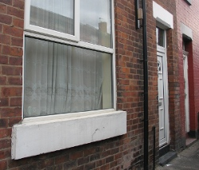

Introduction
This is the story of a group of
Computer Science undergraduates and
our quest to avoid work at all costs by building a
home automation
system for their house. Its a tale of ridiculous hacks, novel
architectures and, above all, liberal use of blu-tack fun.
After meeting in our first year we decided we wanted to try and do something cool with our house. The resulting list of ideas was laughably ambitious, especially given that we couldn't really do anything to the building itself and that we also had to eat.
Two years and many hacks later and we have a remarkably feature-rich home automation system. We've got automated lights, media control, a washing machine that emails you, a recipe-browsing control panel, an electronic door-stop, a doop button and more! The whole thing is built on our own custom home automation system, 'SHET', and designed to be extremely hackable.
In The Beginning... (Motivation)
We started our grand plan listing off all manner of things we wanted our system to do. Apart from the slight concern of how we'd afford food after building this system, we also had to consider the wrath of the landlord. Whatever we built would have to be easily removed and not do (too much) damage to the house.
Our search for a house was a mixed affair. In the 3rd house with more mould than wallpaper, Tom was excited to discover one who's electricity meter had a light that flashed at a rate proportional to usage. Despite this critically important feature, we eventually decided to go somewhere else and landed up at 18 South Grove.
With our house found, we started thinking about what we wanted our home automation system to be like. Looking around the web we discovered that most systems were pretty bad. They generally were pretty clunky and seemingly designed for a bygone era or extremely limited and closed. We wanted something that was really flexible, hackable and actually nice to work with.
Seeing as we are all students, things were obviously going to have to be cheap. This ruled out a lot of options where specialist hardware was needed. Electronics knowledge (for all but Tom) was also in short supply which meant that the system would have to be electrically fairly simple. It also meant that high-voltage stuff was completely out of bounds.
SHET House Event Tunnelling (Designing the Software)
Our reaction to the problem of making the system hackable was a somewhat obvious one for any self-respecting *nix user:
"Shell scripts!" JonathanLuckily, sanity prevailed but the idea stuck. We decided that having a file system-like tree containing all the controllable things in our house was a cool way of doing things.